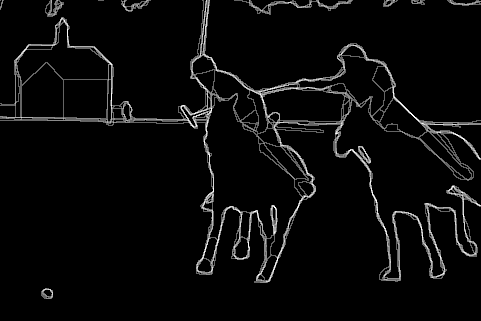
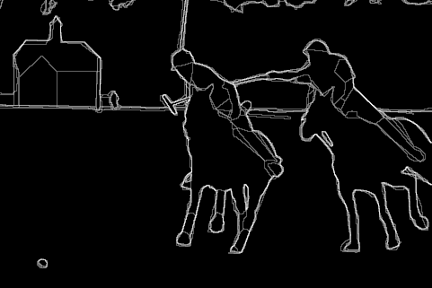
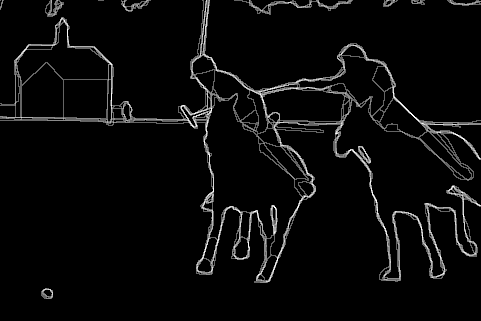
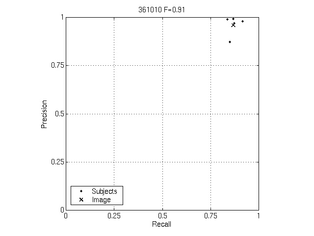
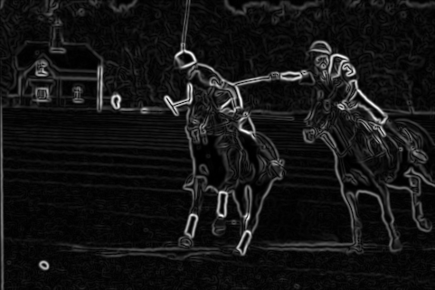
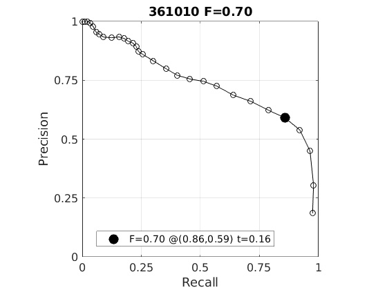
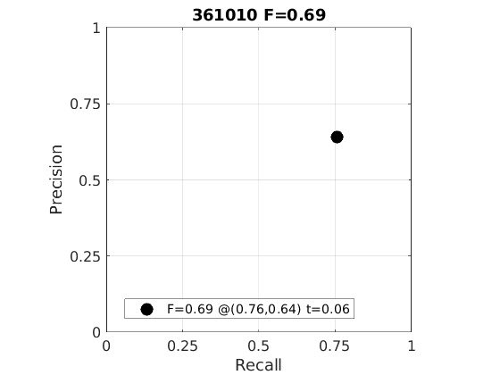

| Rank | Score | Algorithm |
|---|---|---|
| 0 | 0.91 | Humans |
| 1 | 0.70 | Sobel Filter |
| 2 | 0.69 | Canny Filter |

| Rank Algorithm (Score) | Pb | Precision/Recall |
|---|---|---|
| 0 Humans (0.91) |
 | |
| 1 Sobel Filter (0.70) |
 |  |
| 2 Canny Filter (0.69) |
 |
 |
Page generated on 09-Nov-2020 19:38:15.